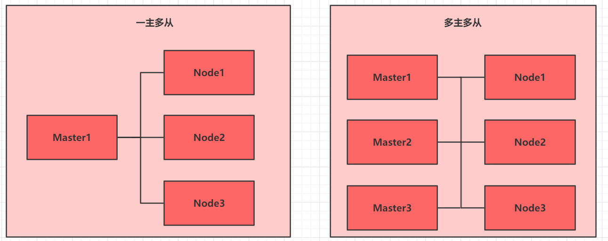
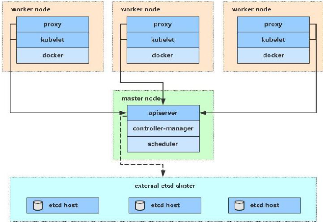
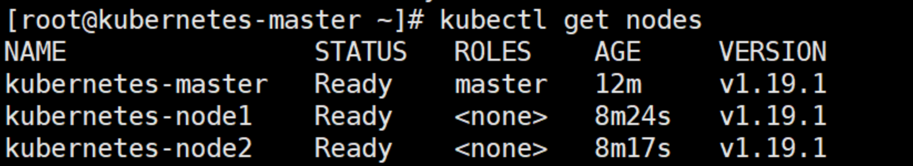

二、Kubernetes集群环境搭建¶
2.1 前置知识点¶
目前生产部署Kubernetes 集群主要有两种方式： - kubeadm
Kubeadm 是一个K8s 部署工具，提供kubeadm init 和kubeadm join，用于快速部署Kubernetes 集群。 官方地址：https://kubernetes.io/docs/reference/setup-tools/kubeadm/kubeadm/ - 二进制包 从github 下载发行版的二进制包，手动部署每个组件，组成Kubernetes 集群。 Kubeadm 降低部署门槛，但屏蔽了很多细节，遇到问题很难排查。如果想更容易可控，推荐使用二进制包部署Kubernetes 集群，虽然手动部署麻烦点，期间可以学习很多工作原理，也利于后期维护。

2.2 Kubernetes部署方式介绍¶
kubeadm 是官方社区推出的一个用于快速部署kubernetes 集群的工具，这个工具能通过两条指令完成一个kubernetes 集群的部署：
- 创建一个Master 节点kubeadm init
- 将Node 节点加入到当前集群中$ kubeadm join
2.3 安装要求¶
在开始之前，部署Kubernetes 集群机器需要满足以下几个条件： - 一台或多台机器，操作系统CentOS7.x-86_x64 - 硬件配置：2GB 或更多RAM，2 个CPU 或更多CPU，硬盘30GB 或更多 - 集群中所有机器之间网络互通 - 可以访问外网，需要拉取镜像 - 禁止swap 分区
2.4 最终目标¶
- 在所有节点上安装Docker 和kubeadm
- 部署Kubernetes Master
- 部署容器网络插件
- 部署Kubernetes Node，将节点加入Kubernetes 集群中
- 部署Dashboard Web 页面，可视化查看Kubernetes 资源
2.5 准备环境¶

| 角色 | IP地址 | 组件 |
|---|---|---|
| master01 | 192.168.5.3 | docker，kubectl，kubeadm，kubelet |
| node01 | 192.168.5.4 | docker，kubectl，kubeadm，kubelet |
| node02 | 192.168.5.5 | docker，kubectl，kubeadm，kubelet |
2.6 环境初始化¶
2.6.1 检查操作系统的版本¶
# 此方式下安装kubernetes集群要求Centos版本要在7.5或之上
[root@master ~]# cat /etc/redhat-release
Centos Linux 7.5.1804 (Core)
2.6.2 主机名解析¶
为了方便集群节点间的直接调用，在这个配置一下主机名解析，企业中推荐使用内部DNS服务器
# 主机名成解析 编辑三台服务器的/etc/hosts文件，添加下面内容
192.168.90.100 master
192.168.90.106 node1
192.168.90.107 node2
2.6.3 时间同步¶
kubernetes要求集群中的节点时间必须精确一直，这里使用chronyd服务从网络同步时间 企业中建议配置内部的会见同步服务器
# 启动chronyd服务
[root@master ~]# systemctl start chronyd
[root@master ~]# systemctl enable chronyd
[root@master ~]# date
2.6.4 禁用iptable和firewalld服务¶
Kubernetes 和 Docker 在运行的中会产生大量的 iptables 规则，为了不让系统规则跟它们混淆，直接关闭系统的规则
# 1 关闭firewalld服务
[root@master ~]# systemctl stop firewalld
[root@master ~]# systemctl disable firewalld
# 2 关闭iptables服务
[root@master ~]# systemctl stop iptables
[root@master ~]# systemctl disable iptables
2.6.5 禁用selinux¶
selinux 是 Linux 系统下的一个安全服务，如果不关闭它，在安装集群中会产生各种各样的奇葩问题。
# 编辑 /etc/selinux/config 文件，修改SELINUX的值为disable
# 注意修改完毕之后需要重启linux服务
SELINUX=disabled
2.6.6 禁用swap分区¶
swap 分区指的是虚拟内存分区，它的作用是物理内存使用完，之后将磁盘空间虚拟成内存来使用，启用 swap 设备会对系统的性能产生非常负面的影响，因此 Kubernetes 要求每个节点都要禁用 swap 设备，但是如果因为某些原因确实不能关闭 swap 分区，就需要在集群安装过程中通过明确的参数进行配置说明。
# 编辑分区配置文件/etc/fstab，注释掉swap分区一行
# 注意修改完毕之后需要重启linux服务
vim /etc/fstab
注释掉 /dev/mapper/centos-swap swap
# /dev/mapper/centos-swap swap
2.6.7 修改linux的内核参数¶
# 修改linux的内核采纳数，添加网桥过滤和地址转发功能
# 编辑/etc/sysctl.d/kubernetes.conf文件，添加如下配置：
net.bridge.bridge-nf-call-ip6tables = 1
net.bridge.bridge-nf-call-iptables = 1
net.ipv4.ip_forward = 1
# 重新加载配置
[root@master ~]# sysctl -p
# 加载网桥过滤模块
[root@master ~]# modprobe br_netfilter
# 查看网桥过滤模块是否加载成功
[root@master ~]# lsmod | grep br_netfilter
2.6.8 配置ipvs功能¶
在Kubernetes中Service有两种带来模型，一种是基于iptables的，一种是基于ipvs的两者比较的话，ipvs的性能明显要高一些，但是如果要使用它，需要手动载入ipvs模块。
# 1.安装ipset和ipvsadm
[root@master ~]# yum install ipset ipvsadm -y
# 2.添加需要加载的模块写入脚本文件
[root@master ~]# cat <<EOF> /etc/sysconfig/modules/ipvs.modules
#!/bin/bash
modprobe -- ip_vs
modprobe -- ip_vs_rr
modprobe -- ip_vs_wrr
modprobe -- ip_vs_sh
modprobe -- nf_conntrack_ipv4
EOF
# 3.为脚本添加执行权限
[root@master ~]# chmod +x /etc/sysconfig/modules/ipvs.modules
# 4.执行脚本文件
[root@master ~]# /bin/bash /etc/sysconfig/modules/ipvs.modules
# 5.查看对应的模块是否加载成功
[root@master ~]# lsmod | grep -e ip_vs -e nf_conntrack_ipv4
2.6.9 安装Docker¶
# 1、切换镜像源
[root@master ~]# wget https://mirrors.aliyun.com/docker-ce/linux/centos/docker-ce.repo -O /etc/yum.repos.d/docker-ce.repo
# 2、查看当前镜像源中支持的docker版本
[root@master ~]# yum list docker-ce --showduplicates
# 3、安装特定版本的docker-ce
# 必须制定--setopt=obsoletes=0，否则yum会自动安装更高版本
[root@master ~]# yum install --setopt=obsoletes=0 docker-ce-18.06.3.ce-3.el7 -y
# 4、添加一个配置文件
#Docker 在默认情况下使用Vgroup Driver为cgroupfs，而Kubernetes推荐使用systemd来替代cgroupfs
[root@master ~]# mkdir /etc/docker
[root@master ~]# cat <<EOF> /etc/docker/daemon.json
{
"exec-opts": ["native.cgroupdriver=systemd"],
"registry-mirrors": ["https://kn0t2bca.mirror.aliyuncs.com"]
}
EOF
# 5、启动dokcer
[root@master ~]# systemctl restart docker
[root@master ~]# systemctl enable docker
2.6.10 安装Kubernetes组件¶
# 1、由于kubernetes的镜像在国外，速度比较慢，这里切换成国内的镜像源
# 2、编辑/etc/yum.repos.d/kubernetes.repo,添加下面的配置
[kubernetes]
name=Kubernetes
baseurl=http://mirrors.aliyun.com/kubernetes/yum/repos/kubernetes-el7-x86_64
enabled=1
gpgchech=0
repo_gpgcheck=0
gpgkey=http://mirrors.aliyun.com/kubernetes/yum/doc/yum-key.gpg
http://mirrors.aliyun.com/kubernetes/yum/doc/rpm-package-key.gpg
# 3、安装kubeadm、kubelet和kubectl
[root@master ~]# yum install --setopt=obsoletes=0 kubeadm-1.17.4-0 kubelet-1.17.4-0 kubectl-1.17.4-0 -y
# 4、配置kubelet的cgroup
#编辑/etc/sysconfig/kubelet, 添加下面的配置
KUBELET_CGROUP_ARGS="--cgroup-driver=systemd"
KUBE_PROXY_MODE="ipvs"
# 5、设置kubelet开机自启
[root@master ~]# systemctl enable kubelet
2.6.11 准备集群镜像¶
# 在安装kubernetes集群之前，必须要提前准备好集群需要的镜像，所需镜像可以通过下面命令查看
[root@master ~]# kubeadm config images list
# 下载镜像
# 此镜像kubernetes的仓库中，由于网络原因，无法连接，下面提供了一种替换方案
images=(
kube-apiserver:v1.17.4
kube-controller-manager:v1.17.4
kube-scheduler:v1.17.4
kube-proxy:v1.17.4
pause:3.1
etcd:3.4.3-0
coredns:1.6.5
)
for imageName in ${images[@]};do
docker pull registry.cn-hangzhou.aliyuncs.com/google_containers/$imageName
docker tag registry.cn-hangzhou.aliyuncs.com/google_containers/$imageName k8s.gcr.io/$imageName
docker rmi registry.cn-hangzhou.aliyuncs.com/google_containers/$imageName
done
2.6.12 集群初始化¶
下面的操作只需要在master节点上执行即可
# 创建集群
[root@master ~]# kubeadm init \
--apiserver-advertise-address=192.168.90.100 \
--image-repository registry.aliyuncs.com/google_containers \
--kubernetes-version=v1.17.4 \
--service-cidr=10.96.0.0/12 \
--pod-network-cidr=10.244.0.0/16
# 创建必要文件
[root@master ~]# mkdir -p $HOME/.kube
[root@master ~]# sudo cp -i /etc/kubernetes/admin.conf $HOME/.kube/config
[root@master ~]# sudo chown $(id -u):$(id -g) $HOME/.kube/config
下面的操作只需要在node节点上执行即可
kubeadm join 192.168.0.100:6443 --token awk15p.t6bamck54w69u4s8 \
--discovery-token-ca-cert-hash sha256:a94fa09562466d32d29523ab6cff122186f1127599fa4dcd5fa0152694f17117
在master上查看节点信息
[root@master ~]# kubectl get nodes
NAME STATUS ROLES AGE VERSION
master NotReady master 6m v1.17.4
node1 NotReady <none> 22s v1.17.4
node2 NotReady <none> 19s v1.17.4
2.6.13 安装网络插件，只在master节点操作即可¶
wget https://raw.githubusercontent.com/coreos/flannel/master/Documentation/kube-flannel.yml
https://github.com/flannel-io/flannel/tree/master/Documentation/kube-flannel.yml
拉取flannel网络，三台主机 docker images¶
查看仓库是否拉去下来¶
个人笔记 若是集群状态一直是 notready,用下面语句查看原因， journalctl -f -u kubelet.service 若原因是： cni.go:237] Unable to update cni config: no networks found in /etc/cni/net.d mkdir -p /etc/cni/net.d #创建目录给flannel做配置文件 vim /etc/cni/net.d/10-flannel.conf
#编写配置文件
{
"name":"cbr0",
"cniVersion":"0.3.1",
"type":"flannel",
"deledate":{
"hairpinMode":true,
"isDefaultGateway":true
}
}
2.6.14 使用kubernetes reset重制集群¶
#在master节点之外的节点进行操作
kubeadm reset
systemctl stop kubelet
systemctl stop docker
rm -rf /var/lib/cni/
rm -rf /var/lib/kubelet/*
rm -rf /etc/cni/
ifconfig cni0 down
ifconfig flannel.1 down
ifconfig docker0 down
ip link delete cni0
ip link delete flannel.1
##重启kubelet
systemctl restart kubelet
##重启docker
systemctl restart docker
2.6.15 重启kubelet和docker¶
# 重启kubelet
systemctl restart kubelet
# 重启docker
systemctl restart docker
使用配置文件启动fannel
kubectl apply -f kube-flannel.yml
等待它安装完毕，集群的状态已经是Ready。

2.6.16 Kuberadm中的命令¶
# 生成 新的token
[root@master ~]# kubeadm token create --print-join-command
2.7 集群测试¶
2.7.1 创建一个nginx服务¶
kubectl create deployment nginx --image=nginx:1.14-alpine
2.7.2 暴露端口¶
kubectl expose deploy nginx --port=80 --target-port=80 --type=NodePort
2.7.3 查看服务¶
kubectl get pod,svc
2.7.4 查看Pod¶
kubectl get pod